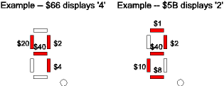
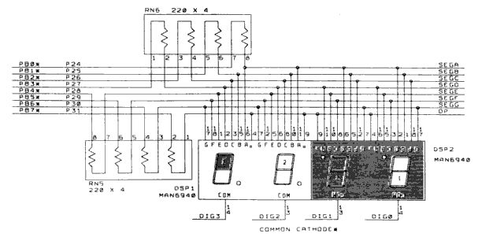
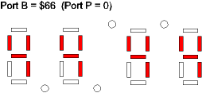
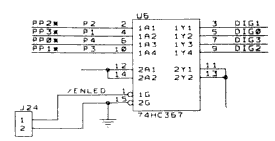
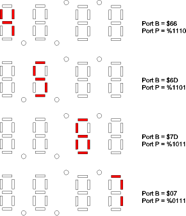
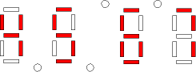

| Previous Appendix | Next Appendix | Index | Search the Text |
The seven-segment LED (Light Emitting Diode) display is a common part used to display information to the user. The seven segments each contain an LED, plus an eighth diode is used for a decimal point. Eight signal lines are used to illuminate the segments individually. A typical connection that which is on the Dragon12-Plus board used in this section, is shown below:
The anodes of the diodes are connected to a port with weights (values) as shown. The cathodes are connected in common to ground. Series resistors are required between the display and the microcontroller port to limit current in the lit, forward-biased diodes. By selecting different combinations of bits, the numerals '0' through '9' are easily displayed. Certain other characters can be displayed as well, although in some cases a certain amount of imagination is needed to realize what character the display represents. The segment mapping table below shows what values display which characters. The index column represents a table index - in the program at the end of this section, a table is used with these values. By having table indices 0 through 9 correspond to display values 0 through 9 it's easy to use the displays to show numeric information. Some displays have built-in logic to display digits based on a provided 4 bit BCD value, however we will use the simpler, basic display here.
| Index | Value | Displays as | Index | Value | Displays as | |
|---|---|---|---|---|---|---|
| 0 | $3F | 0 | 17 | $76 | H | |
| 1 | $06 | 1 | 18 | $74 | h | |
| 2 | $5B | 2 | 19 | $1E | J | |
| 3 | $4F | 3 | 20 | $38 | L | |
| 4 | $66 | 4 | 21 | $54 | n | |
| 5 | $6D | 5 | 22 | $63 | o (raised) | |
| 6 | $7D | 6 | 23 | $5C | o | |
| 7 | $07 | 7 | 24 | $73 | P | |
| 8 | $7F | 8 | 25 | $50 | r | |
| 9 | $6F | 9 | 26 | $78 | t | |
| 10 | $77 | A | 27 | $3E | U | |
| 11 | $7C | b | 28 | $1C | u | |
| 12 | $39 | C | 29 | $6E | Y | |
| 13 | $5E | d | 30 | $08 | _ | |
| 14 | $79 | E | 31 | $40 | - | |
| 15 | $71 | F | 32 | $00 | blank | |
| 16 | $3D | G |
Here's an example showing displaying '4' and '2' from the segment mapping table, above. Adding $80 (setting the most significant bit) of the value will light the decimal point.

There are four seven-segment display units on the Dragon12-12 board, allowing the display of 4 characters of information. The schematic for the anode connections is shown below. Note that two of the characters are upside down. The connections compensate for this. The reason for the upside down characters is to place the decimal point LEDs so that there are two central decimal points that can be used as a colon when implementing a clock display.

If we drive port B (which connects to the anodes) with the value $66, we get:

We have a problem in that all four displays show the same character! To solve this problem, the cathodes are driven from four pins on port P:

By driving a single pin of port P low, with the remaining three driven high, we can select a single display at a time and show a different value in each display. In the example below, we can display "4567":

Of course we really want to have all digits lit at the same time, like this:

While this is not possible, if we drive each character sequentially at a fast enough rate, the users eyes will perceive all the characters being displayed at the same time. The is the same principal that is used with CRT displays and motion pictures. To eliminate "flicker" each character must be lit at least 60 times a second. This means that we must switch from character to character at least 240 times per second. The best way to accomplish this is to use an interrupt routine to display each character in turn, and have that routine executed at least every 4 milliseconds. We can use the Real Time Interrupt to accomplish this!
This program is on the CD here. It will display the word "HELP" on the LED display of the Dragon12-Plus board.
#include registers.inc ; include register equates and memory map
org DATASTART
;
char: ds 1 ; Character last displayed (index 0, 1, 2, 3)
disptn: ds 4 ; These four bytes will be displayed
; Using the segment values shown below in segm_ptrn
There is very little data for this program. One byte is used to indicate the character being lit (0 for the left-most through 3 for the right-most). A 4 byte array holds the bytes to be displayed. The values of the bytes are the indices into the segment mapping table segm_ptrn which is the same as shown at the start of this section. If we were displaying a numeric value, the four bytes would each contain a BCD digit of the decimal value.
org PRSTART
;
start:
lds #DATAEND ; initialize the stack
movw #rtiisr UserRTI ; initialize the int vetctor
ldaa #$ff ;
staa DDRB ; portb = output
staa DDRP ; portp = output
staa PTP ; turn off 7-segment display
This is straightforward initialization.
movb #$17 RTICTL ; RTI divider is 8192, about 1 mSec
bset CRGINT #$80 ; enable RTI interrupts
For the Real Time Interrupt, we want an interrupt roughly every 1 millisecond. This means dividing the 8 MHz crystal clock by 8192. There are several settings that will do this. The value $17 gives a divide by 8 cascaded with a divide by 1024. We enable RTI interrupts, but none can occur until we clear the I bit in the condition code register.
ldx #disptn ; Address of display field
movb #$11+$80 1,X+ ; binary code for the letter 'H'
; (set decimal point as well)
movb #$0E 1,X+ ; binary code for the letter 'E'
movb #$14 1,X+ ; binary code for the letter 'L'
movb #$18 0,X ; binary code for the letter 'P'
The display array is initialized for the characters HELP. The values here are the indices into the table. We will also set the decimal point LED on the first character.
cli ; Start interrupts
idle: wai ; idle process
jmp idle
Everything happens in the interrupt service routine rtiisr, so all we do in the idle process is wait for the next interrupt. Now we get the interrupt service routine:
rtiisr:
bclr CRGFLG #~$80 ; clear RTI flag
ldab char ; character selection
cli ; allow other interrupts to occur
We clear the RTI flag, allowing the program to eventually return from the interrupt service routine. After a one instruction delay, the interrupt flag is cleared so other interrupts can be handled. In this program there are no other interrupts, but this is good programming practice nonetheless.
incb ; char+1 modulo 4
andb #3
stab char
The value in char is incremented, modulo 4. This will advance to the next character.
tfr b x ; character selection in X
ldaa disptn,x ; get desired display value
We use the char value to index the array of characters to display, and fetch that value, which is an index into the segment mapping table.
tfr a b
anda #$7f ; mask off the decimal point
ldy #segm_ptrn
ldaa a,y ; look up segments to light in table
We mask off the most significant bit when indexing the table since the most significant bit isn't a table index but is the decimal point indicator.
andb #$80 ; mask off all but the decimal point
aba ; merge decimal point into segment value
staa PORTB ; light the segments
The decimal point bit is merged back into the segment mapping table value, and the correct segments are lit. But the segments are of the wrong character position, so we need to change the value in port P as well.
ldaa PTP ; only alter port p bits we are using
anda #$f0
oraa dspmap,x ; light up correct char
staa PTP
We must be careful to only alter the four least significant bits of port P since the other bits might be used for other features. The table dspmap is used to select the correct character to light given the index to the character position.
rti
And we are done with the code. What remains are the tables:
dspmap: db $0e,$0d,$0b,$07 ; Selects the correct character for lighting
segm_ptrn: ; segment pattern
db $3f,$06,$5b,$4f,$66,$6d,$7d,$07 ; 0-7
; 0, 1, 2, 3, 4, 5, 6, 7
db $7f,$6f,$77,$7c,$39,$5e,$79,$71 ; 8-15
; 8, 9, A, b, C, d, E, F
db $3d,$76,$74,$1e,$38,$54,$63,$5c ; 16-23
; G, H, h, J L n o o
db $73,$50,$78,$3e,$1c,$6e,$08,$40 ; 24-31
; P, r, t, U, u Y _ -
db $00 ; 32
; blk
;
end
Continue with Multiple Processes
Return to the Index.